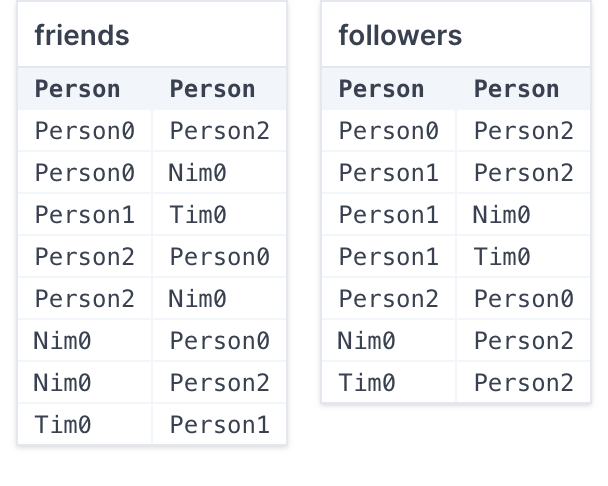
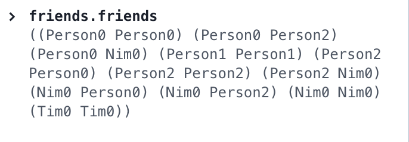
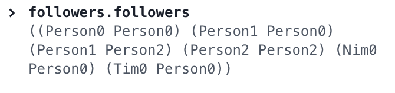
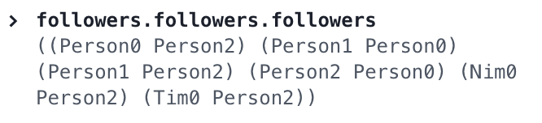

Relational Forge Q&A¶
The Truth About Dot¶
This part of the notes is meant to reinforce what we'd previously done with relational join in Forge. We'll cover some of this in class, but the rest is here for your reference.
Let's go back to the directed-graph model we used before:
#lang forge
sig Person {
friends: set Person,
followers: set Person
}
one sig Nim, Tim extends Person {}
pred wellformed {
-- friendship is symmetric
all disj p1, p2: Person | p1 in p2.friends implies p2 in p1.friends
-- cannot follow or friend yourself
all p: Person | p not in p.friends and p not in p.followers
}
run {wellformed} for exactly 5 Person
pred reachableIn1To7Hops[to: Person, from: Person, fld: Person->Person] {
to in from.fld or
to in from.fld.fld or
to in from.fld.fld.fld or
to in from.fld.fld.fld.fld or
to in from.fld.fld.fld.fld.fld or
to in from.fld.fld.fld.fld.fld.fld or
to in from.fld.fld.fld.fld.fld.fld.fld
-- ... and so on, for any finite number of hops
-- this is what you use the transitive-closure operator (^)
-- or the reachable built-in predicate for.
}
We said that chaining field access with . allows us to compute reachability in a certain number of hops. That's how reachableIn1To7Hops works.
However, there's more to . than this.
Beyond Field Access¶
Let's run this model, and open up the evaluator. I'll show the first instance Forge found using the table view:

We saw that Tim.friends produces the set of Tim's friends, and that Tim.friends.friends produces the set of Tim's friends' friends. But let's try something else. Enter this into the evaluator:
This looks like a nonsense expression: there's no object to reference the friends field of. But it means something in Forge:

What do you notice about this result? Recall that this is just a parenthetical way to show a set of tuples: it's got \((Person0, Person0)\) in it, and so on.
Think, then click!
This seems to be the binary relation (set of 2-element tuples) that describes the friend-of-friend relationship. Because we said that friendship is symmetric, everyone who has friends is a friend-of-a-friend of themselves. And so on.
The . operator in Forge isn't exactly field access. It behaves that way in Froglet, but now that we have sets in the language, it's more powerful. It lets us combine relations in a path-like way.
Relational Join (.)¶
Here's the precise definition of the relational join operator (.):
If R and S are relations (with \(n\) and \(m\) columns, respectively), then R.S is defined to be the set of \((n+m-2)\)-column tuples: \(\{(r_1, ..., r_{n-1}, s_2, ..., s_m) |\; (r_1, ..., r_n) \in R, (s_1, ..., s_m) \in S, \text{ and } r_n = s_1 \}\)
That is, whenever the inner columns of the two relations line up on some value, their join contains some tuple(s) that have the inner columns eliminated.
In a path-finding context, this is why Tim.friends.friends.friends.friends has one column, and all the intermediate steps have been removed: Tim has one column, and friends has 2 columns. Tim.friends is the \((1+2-2)\)-column relation of Tim's friends. And so on: every time we join on another friends, 2 columns are removed.
Let's try this out in the evaluator:


Does this mean that we can write something like followers.Tim? Yes; it denotes the set of everyone who has Tim as a follower:
Note that this is very different from Tim.followers, which is the set of everyone who follows Tim:
Testing Our Definition¶
We can use Forge to validate the above definition, for relations with fixed arity. So if we want to check the definition for pairs of binary relations, up to a bound of 10, we'd run:
test expect {
joinDefinitionForBinary: {
friends.followers =
{p1, p2: Person | some x: Person | p1->x in friends and
x->p2 in followers}
} for 10 Person is checked
}
Notice that we don't include wellformed here: if we did, we wouldn't be checking the definition for all possible graphs.
What's Join Good For?¶
Here's an example. Suppose you're modeling something like Dijkstra's algorithm. You'd need a weighted directed graph, which might be something like this:
But then edges has three columns, and you won't be able to use either reachable or ^ on it directly. Instead, you can eliminate the rightmost column with join: edges.Int, and then use that expression as if it were a set field.